pacman::p_load(sf, tidyverse, tmap, spdep, funModeling)Take-home_Ex1
nga_Geo <- st_read(dsn = "geodata",
layer = "geoBoundaries-NGA-ADM2")ngwaterpoints <- read_csv("aspatial/Water_Point.csv")nga_Geo <- nga_Geo %>%
st_transform(crs = 26391)ngpoint <- ngwaterpoints %>%
rename ("Country" = "#clean_country_name",
"clean_adm2" = "#clean_adm2",
"status" = "#status_clean",
"lat" = "#lat_deg",
"long" = "#lon_deg") %>%
select (clean_adm2,status,lat,long) %>%
mutate(status = replace_na(status, "Unknown"))
ngpoint_sf <- st_as_sf(ngpoint, coords = c("long", "lat"), crs = 4326)ngpoint_sf <- st_transform(ngpoint_sf, crs = 26391)
st_crs (nga_Geo)
st_crs (ngpoint_sf)wpt_functional <- ngpoint_sf %>%
filter(status %in%
c("Functional",
"Functional but not in use",
"Functional but needs repair"))wpt_nonfunctional <- ngpoint_sf %>%
filter(status %in%
c("Abandoned/Decommissioned",
"Abandoned",
"Non-Functional",
"Non functional due to dry season",
"Non-Functional due to dry season"))wpt_unknown <- ngpoint_sf %>%
filter(status == "Unknown")ngpoint_sf <- nga_Geo %>%
mutate(`total wpt` = lengths(
st_intersects(nga_Geo, ngpoint_sf))) %>%
mutate(`wpt functional` = lengths(
st_intersects(nga_Geo, wpt_functional))) %>%
mutate(`wpt non-functional` = lengths(
st_intersects(nga_Geo, wpt_nonfunctional))) %>%
mutate(`wpt unknown` = lengths(
st_intersects(nga_Geo, wpt_unknown)))ngpoint_sf <- ngpoint_sf %>%
mutate(pct_functional = `wpt functional`/`total wpt`) %>%
mutate(`pct_non-functional` = `wpt non-functional`/`total wpt`)write_rds(ngpoint_sf, "data/ngpoint_sf.rds")Choropleth Mapping Geospatial Data Using tmap
ngpoint_sf <- read_rds("data/ngpoint_sf.rds")
total <- qtm(ngpoint_sf, "total wpt")
wp_functional <- qtm(ngpoint_sf,
fill = "wpt functional")
wp_nonfunctional <- qtm(ngpoint_sf,
fill = "wpt non-functional")
unknown <- qtm(ngpoint_sf,
fill = "wpt unknown")
tmap_arrange(total, wp_functional, wp_nonfunctional, unknown, ncol=2)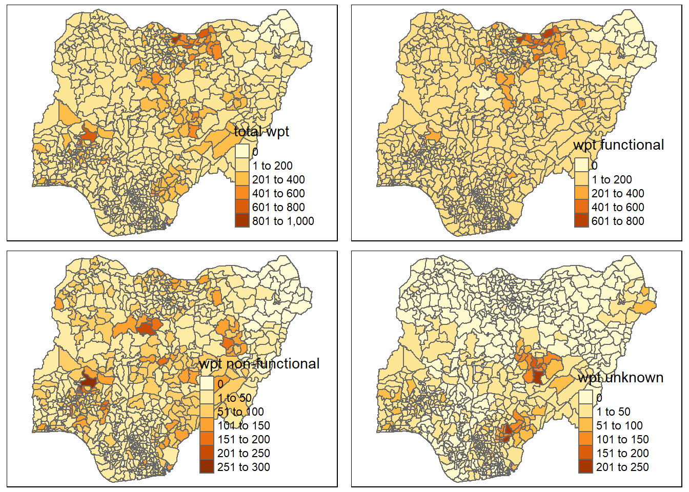
equal <- tm_shape(ngpoint_sf) +
tm_fill("wpt non-functional",
n = 5,
style = "equal") +
tm_borders(alpha = 0.5) +
tm_layout(main.title = "Equal interval classification")
quantile <- tm_shape(ngpoint_sf) +
tm_fill("wpt non-functional",
n = 5,
style = "quantile") +
tm_borders(alpha = 0.5) +
tm_layout(main.title = "quantile classification")
tmap_arrange(equal,
quantile,
asp=1,
ncol=2)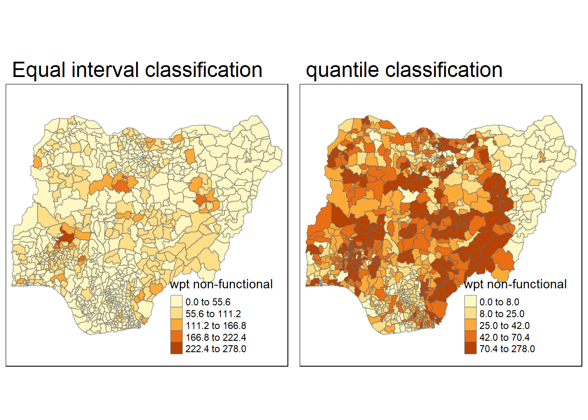
kmeans <- tm_shape(ngpoint_sf) +
tm_fill("wpt non-functional",
n = 5,
style = "kmeans") +
tm_borders(alpha = 0.5) +
tm_layout(main.title = "Kmeans classification")
fisher <- tm_shape(ngpoint_sf) +
tm_fill("wpt non-functional",
n = 5,
style = "fisher") +
tm_borders(alpha = 0.5) +
tm_layout(main.title = "fisher classification")
tmap_arrange(kmeans,
fisher,
asp=1,
ncol=2)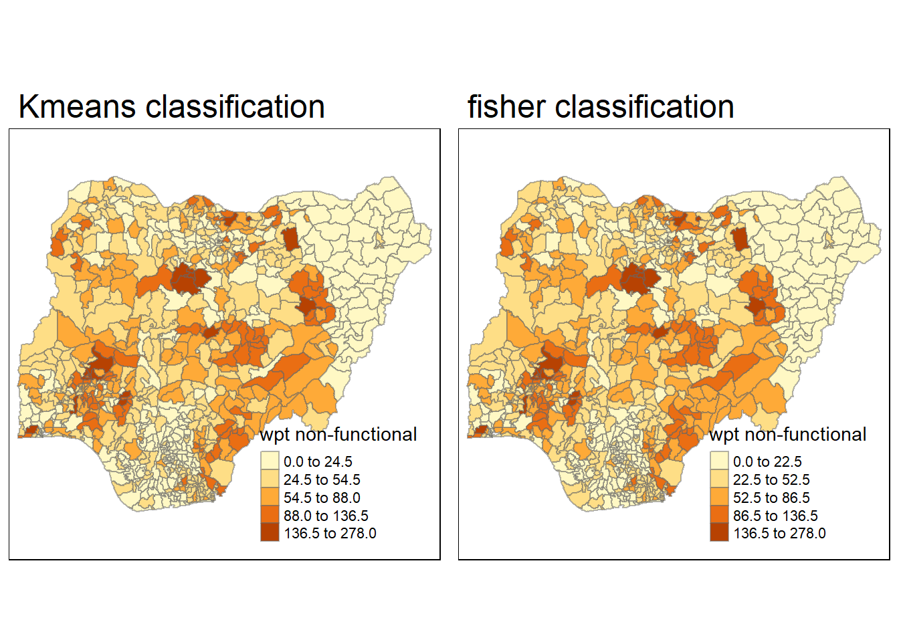
Cluster and Outlier Analysis
wp_q <- poly2nb(ngpoint_sf,
queen=TRUE)
summary(wp_q)Neighbour list object:
Number of regions: 774
Number of nonzero links: 4440
Percentage nonzero weights: 0.7411414
Average number of links: 5.736434
1 region with no links:
86
Link number distribution:
0 1 2 3 4 5 6 7 8 9 10 11 12 14
1 2 14 57 125 182 140 122 72 41 12 4 1 1
2 least connected regions:
138 560 with 1 link
1 most connected region:
508 with 14 linksset.ZeroPolicyOption(TRUE)[1] FALSErrwp_q <- nb2listw(wp_q,
style="W",
zero.policy = TRUE)
rrwp_qCharacteristics of weights list object:
Neighbour list object:
Number of regions: 774
Number of nonzero links: 4440
Percentage nonzero weights: 0.7411414
Average number of links: 5.736434
1 region with no links:
86
Weights style: W
Weights constants summary:
n nn S0 S1 S2
W 773 597529 773 285.0658 3198.414Computing Local Moron’s I
check <- order(ngpoint_sf$shapeName)
localMI <- localmoran(ngpoint_sf$`wpt non-functional`, rrwp_q)
head(localMI) Ii E.Ii Var.Ii Z.Ii Pr(z != E(Ii))
1 -0.32365786 -9.995243e-04 1.924638e-01 -0.73547576 0.46204980
2 0.07000542 -4.092463e-05 1.053077e-02 0.68258288 0.49487045
3 1.25819985 -1.627684e-03 4.181728e-01 1.94819847 0.05139122
4 -0.03537489 -5.427505e-05 5.954304e-03 -0.45773361 0.64714384
5 0.01201533 -2.590965e-04 3.988998e-02 0.06145673 0.95099547
6 0.00768085 -1.538445e-07 1.687859e-05 1.86960486 0.06153871nga.localMI <- cbind(ngpoint_sf,localMI) %>%
rename(Pr.Ii = Pr.z....E.Ii..)tm_shape(nga.localMI) +
tm_fill(col = "Ii",
style = "pretty",
palette = "RdBu",
title = "local moran statistics") +
tm_borders(alpha = 0.5)Variable(s) "Ii" contains positive and negative values, so midpoint is set to 0. Set midpoint = NA to show the full spectrum of the color palette.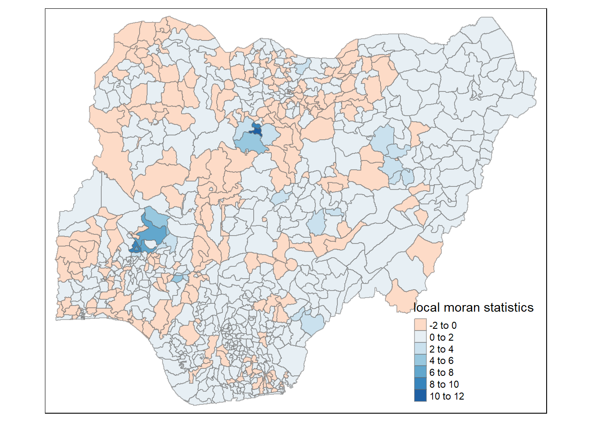
tm_shape(nga.localMI) +
tm_fill(col = "Pr.Ii",
breaks=c(-Inf, 0.001, 0.01, 0.05, 0.1, Inf),
palette="-Greens",
title = "local Moran's I p-values") +
tm_borders(alpha = 0.5)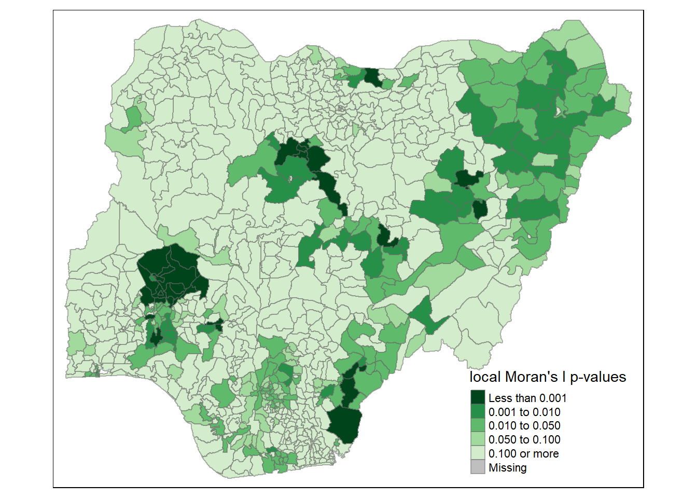
Creating a LISA Cluster Map
age <- moran.plot(ngpoint_sf$`wpt non-functional`, rrwp_q,
labels=as.character(ngpoint_sf$shapeName),
xlab="Non-Functional waterpoints in Nigeria",
ylab="Spatially Lag Non-functional waterpoints in Nigeria")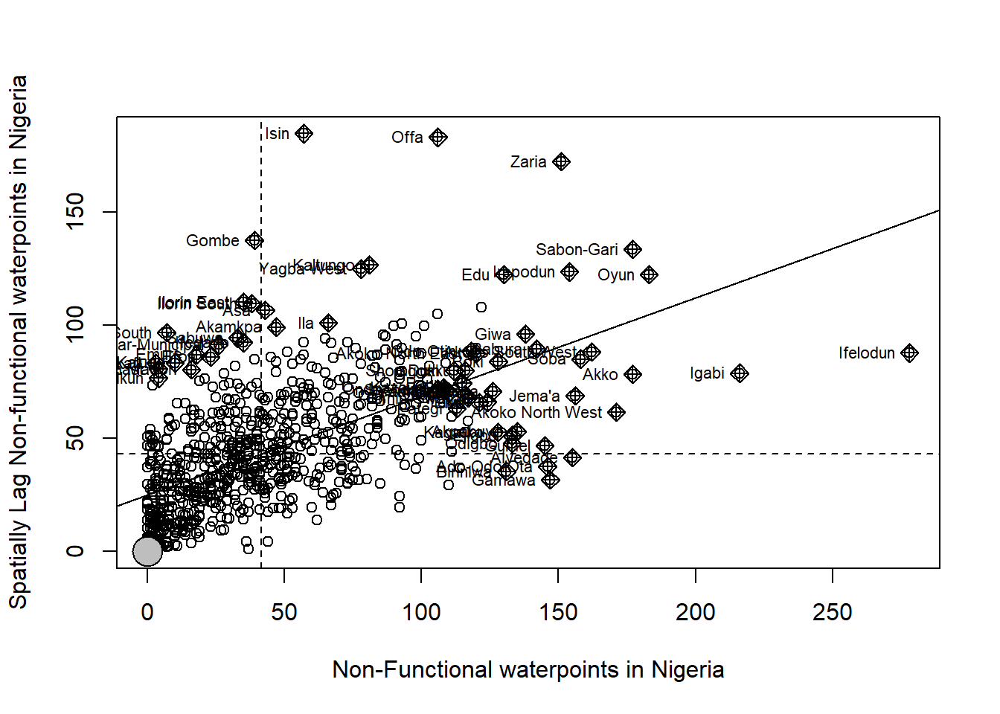
ngpoint_sf$Z.nonfunc <- scale(ngpoint_sf$`wpt non-functional`) %>%
as.vector
nci2 <- moran.plot(ngpoint_sf$Z.nonfunc, rrwp_q,
labels=as.character(ngpoint_sf$shapeName),
xlab="functional points",
ylab="Spatially Lag non functional points")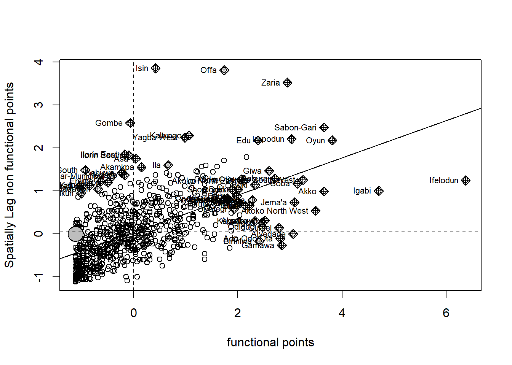
quadrant <- vector(mode="numeric",length=nrow(localMI))
ngpoint_sf$lag_non_func_points <- lag.listw(rrwp_q, ngpoint_sf$`wpt non-functional`)
DV <- ngpoint_sf$lag_non_func_points - mean(ngpoint_sf$lag_non_func_points)
LM_I <- localMI[,1] - mean(localMI[,1])
signif <- 0.05
quadrant[DV <0 & LM_I>0] <- 1
quadrant[DV >0 & LM_I<0] <- 2
quadrant[DV <0 & LM_I<0] <- 3
quadrant[DV >0 & LM_I>0] <- 4
quadrant[localMI[,5]>signif] <- 0Plotting LISA MAP
nga.localMI$quadrant <- quadrant
colors <- c( "#2c7bb6", "#abd9e9", "#fdae61", "#d7191c", "#ffffff")
clusters <- c("insignificant", "low-low", "low-high", "high-low", "high-high")
tm_shape(nga.localMI) +
tm_fill(col = "quadrant",
style = "cat",
palette = colors[c(sort(unique(quadrant)))+1],
labels = clusters[c(sort(unique(quadrant)))+1],
popup.vars = c("")) +
tm_view(set.zoom.limits = c(11,17)) +
tm_borders(alpha=0.5)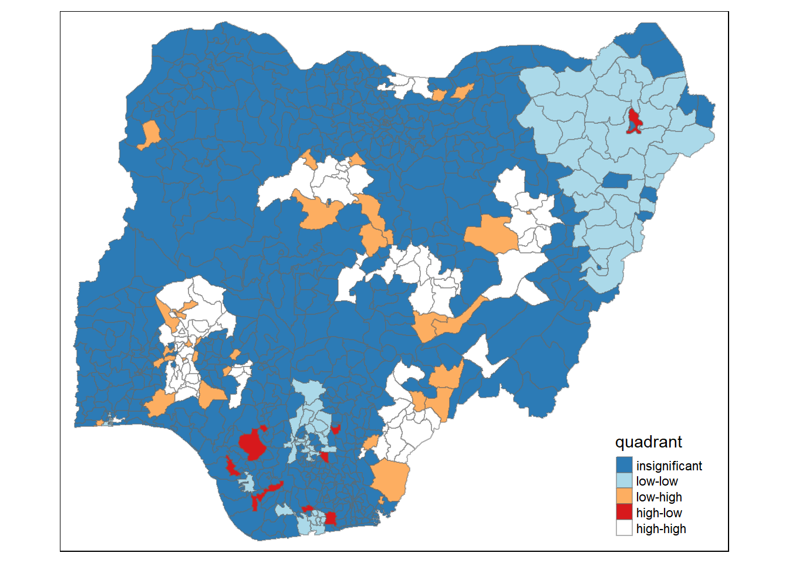
Hot Spot and Cold Spot Area Analysis
Deriving distance based weight matrix
coords <- st_centroid(st_geometry(ngpoint_sf))
coords[1]Geometry set for 1 feature
Geometry type: POINT
Dimension: XY
Bounding box: xmin: 549364 ymin: 123694.9 xmax: 549364 ymax: 123694.9
Projected CRS: Minna / Nigeria West BeltPOINT (549364 123694.9)k1 <- knn2nb(knearneigh(coords))
k1dists <- unlist(nbdists(k1, coords))
summary(k1dists) Min. 1st Qu. Median Mean 3rd Qu. Max.
2669 12834 20304 22084 27783 72139 threshold <- max(unlist(nbdists(k1, coords)))Computing Fixed distance weight matrix
wm_d73 <- dnearneigh(coords, 0, threshold)
wm_d73Neighbour list object:
Number of regions: 774
Number of nonzero links: 18130
Percentage nonzero weights: 3.026327
Average number of links: 23.42377 wm62_lw <- nb2listw(wm_d73, style = 'B')
summary(wm_d73)Neighbour list object:
Number of regions: 774
Number of nonzero links: 18130
Percentage nonzero weights: 3.026327
Average number of links: 23.42377
Link number distribution:
1 2 3 4 5 6 7 8 9 10 11 12 13 14 15 16 17 18 19 20 21 22 23 24 25 26
5 9 11 22 32 35 33 34 29 35 27 18 21 23 16 12 12 11 16 17 16 10 14 10 5 13
27 28 29 30 31 32 33 34 35 36 37 38 39 40 41 42 43 44 45 46 47 48 49 50 51 52
12 5 15 13 12 7 10 8 12 5 12 17 14 9 10 4 5 3 7 6 11 8 5 5 4 2
53 54 55 56 57 58 59 60 61 62 63 64 65 67 68 70
3 3 6 3 5 6 2 5 5 8 6 6 4 3 1 1
5 least connected regions:
90 112 123 237 670 with 1 link
1 most connected region:
585 with 70 linksComputing Inverse Adaptive distance weight matrix
k8 <- knn2nb(knearneigh(coords, k = 8))
k8Neighbour list object:
Number of regions: 774
Number of nonzero links: 6192
Percentage nonzero weights: 1.033592
Average number of links: 8
Non-symmetric neighbours listComputing Inverse Distance Weights for Fixed Distance
distances <- nbdists(wm_d73,coords)
distances[1][[1]]
[1] 4004.008 45439.251 37710.356 51041.840 67445.464 65694.575 70278.881
[8] 66402.395 70754.787 63293.565 44070.130 67132.783 30584.808 31191.772
[15] 31060.775 61914.751 40430.849 50524.637 68364.757 57815.248 58326.473
[22] 21477.914 55573.697 46904.765 62426.753 37887.549 52063.146 40086.745
[29] 52077.350 19783.847 31237.020 65772.348 68438.043 48339.227 66025.875
[36] 63788.895 32358.664 62335.064 71500.748 11065.063 48564.675 29667.531
[43] 49875.572 55850.546 70099.782 57661.903 16123.664 69453.919 46496.314
[50] 9313.577 56305.742 48780.437 56595.108 31208.261 53734.648 40998.087
[57] 10676.236 35065.479 20859.370 23059.238 53898.687 43026.271 61625.223distances <- lapply(distances, function(x) (1/(x/1000)))
distances[1][[1]]
[1] 0.24974975 0.02200741 0.02651791 0.01959177 0.01482679 0.01522196
[7] 0.01422903 0.01505970 0.01413332 0.01579939 0.02269111 0.01489585
[13] 0.03269597 0.03205974 0.03219495 0.01615124 0.02473359 0.01979232
[19] 0.01462742 0.01729648 0.01714487 0.04655946 0.01799412 0.02131980
[25] 0.01601877 0.02639390 0.01920744 0.02494590 0.01920221 0.05054629
[31] 0.03201330 0.01520396 0.01461176 0.02068713 0.01514558 0.01567671
[37] 0.03090362 0.01604234 0.01398587 0.09037454 0.02059110 0.03370688
[43] 0.02004990 0.01790493 0.01426538 0.01734247 0.06202064 0.01439804
[49] 0.02150708 0.10737014 0.01776018 0.02050002 0.01766937 0.03204280
[55] 0.01860997 0.02439138 0.09366597 0.02851808 0.04794009 0.04336657
[61] 0.01855333 0.02324161 0.01622712Adaptive Distance
knn <- knn2nb(knearneigh(coords, k=8))
knnNeighbour list object:
Number of regions: 774
Number of nonzero links: 6192
Percentage nonzero weights: 1.033592
Average number of links: 8
Non-symmetric neighbours listknn_lw <- nb2listw(knn, style = 'B')
summary(knn_lw)Characteristics of weights list object:
Neighbour list object:
Number of regions: 774
Number of nonzero links: 6192
Percentage nonzero weights: 1.033592
Average number of links: 8
Non-symmetric neighbours list
Link number distribution:
8
774
774 least connected regions:
1 2 3 4 5 6 7 8 9 10 11 12 13 14 15 16 17 18 19 20 21 22 23 24 25 26 27 28 29 30 31 32 33 34 35 36 37 38 39 40 41 42 43 44 45 46 47 48 49 50 51 52 53 54 55 56 57 58 59 60 61 62 63 64 65 66 67 68 69 70 71 72 73 74 75 76 77 78 79 80 81 82 83 84 85 86 87 88 89 90 91 92 93 94 95 96 97 98 99 100 101 102 103 104 105 106 107 108 109 110 111 112 113 114 115 116 117 118 119 120 121 122 123 124 125 126 127 128 129 130 131 132 133 134 135 136 137 138 139 140 141 142 143 144 145 146 147 148 149 150 151 152 153 154 155 156 157 158 159 160 161 162 163 164 165 166 167 168 169 170 171 172 173 174 175 176 177 178 179 180 181 182 183 184 185 186 187 188 189 190 191 192 193 194 195 196 197 198 199 200 201 202 203 204 205 206 207 208 209 210 211 212 213 214 215 216 217 218 219 220 221 222 223 224 225 226 227 228 229 230 231 232 233 234 235 236 237 238 239 240 241 242 243 244 245 246 247 248 249 250 251 252 253 254 255 256 257 258 259 260 261 262 263 264 265 266 267 268 269 270 271 272 273 274 275 276 277 278 279 280 281 282 283 284 285 286 287 288 289 290 291 292 293 294 295 296 297 298 299 300 301 302 303 304 305 306 307 308 309 310 311 312 313 314 315 316 317 318 319 320 321 322 323 324 325 326 327 328 329 330 331 332 333 334 335 336 337 338 339 340 341 342 343 344 345 346 347 348 349 350 351 352 353 354 355 356 357 358 359 360 361 362 363 364 365 366 367 368 369 370 371 372 373 374 375 376 377 378 379 380 381 382 383 384 385 386 387 388 389 390 391 392 393 394 395 396 397 398 399 400 401 402 403 404 405 406 407 408 409 410 411 412 413 414 415 416 417 418 419 420 421 422 423 424 425 426 427 428 429 430 431 432 433 434 435 436 437 438 439 440 441 442 443 444 445 446 447 448 449 450 451 452 453 454 455 456 457 458 459 460 461 462 463 464 465 466 467 468 469 470 471 472 473 474 475 476 477 478 479 480 481 482 483 484 485 486 487 488 489 490 491 492 493 494 495 496 497 498 499 500 501 502 503 504 505 506 507 508 509 510 511 512 513 514 515 516 517 518 519 520 521 522 523 524 525 526 527 528 529 530 531 532 533 534 535 536 537 538 539 540 541 542 543 544 545 546 547 548 549 550 551 552 553 554 555 556 557 558 559 560 561 562 563 564 565 566 567 568 569 570 571 572 573 574 575 576 577 578 579 580 581 582 583 584 585 586 587 588 589 590 591 592 593 594 595 596 597 598 599 600 601 602 603 604 605 606 607 608 609 610 611 612 613 614 615 616 617 618 619 620 621 622 623 624 625 626 627 628 629 630 631 632 633 634 635 636 637 638 639 640 641 642 643 644 645 646 647 648 649 650 651 652 653 654 655 656 657 658 659 660 661 662 663 664 665 666 667 668 669 670 671 672 673 674 675 676 677 678 679 680 681 682 683 684 685 686 687 688 689 690 691 692 693 694 695 696 697 698 699 700 701 702 703 704 705 706 707 708 709 710 711 712 713 714 715 716 717 718 719 720 721 722 723 724 725 726 727 728 729 730 731 732 733 734 735 736 737 738 739 740 741 742 743 744 745 746 747 748 749 750 751 752 753 754 755 756 757 758 759 760 761 762 763 764 765 766 767 768 769 770 771 772 773 774 with 8 links
774 most connected regions:
1 2 3 4 5 6 7 8 9 10 11 12 13 14 15 16 17 18 19 20 21 22 23 24 25 26 27 28 29 30 31 32 33 34 35 36 37 38 39 40 41 42 43 44 45 46 47 48 49 50 51 52 53 54 55 56 57 58 59 60 61 62 63 64 65 66 67 68 69 70 71 72 73 74 75 76 77 78 79 80 81 82 83 84 85 86 87 88 89 90 91 92 93 94 95 96 97 98 99 100 101 102 103 104 105 106 107 108 109 110 111 112 113 114 115 116 117 118 119 120 121 122 123 124 125 126 127 128 129 130 131 132 133 134 135 136 137 138 139 140 141 142 143 144 145 146 147 148 149 150 151 152 153 154 155 156 157 158 159 160 161 162 163 164 165 166 167 168 169 170 171 172 173 174 175 176 177 178 179 180 181 182 183 184 185 186 187 188 189 190 191 192 193 194 195 196 197 198 199 200 201 202 203 204 205 206 207 208 209 210 211 212 213 214 215 216 217 218 219 220 221 222 223 224 225 226 227 228 229 230 231 232 233 234 235 236 237 238 239 240 241 242 243 244 245 246 247 248 249 250 251 252 253 254 255 256 257 258 259 260 261 262 263 264 265 266 267 268 269 270 271 272 273 274 275 276 277 278 279 280 281 282 283 284 285 286 287 288 289 290 291 292 293 294 295 296 297 298 299 300 301 302 303 304 305 306 307 308 309 310 311 312 313 314 315 316 317 318 319 320 321 322 323 324 325 326 327 328 329 330 331 332 333 334 335 336 337 338 339 340 341 342 343 344 345 346 347 348 349 350 351 352 353 354 355 356 357 358 359 360 361 362 363 364 365 366 367 368 369 370 371 372 373 374 375 376 377 378 379 380 381 382 383 384 385 386 387 388 389 390 391 392 393 394 395 396 397 398 399 400 401 402 403 404 405 406 407 408 409 410 411 412 413 414 415 416 417 418 419 420 421 422 423 424 425 426 427 428 429 430 431 432 433 434 435 436 437 438 439 440 441 442 443 444 445 446 447 448 449 450 451 452 453 454 455 456 457 458 459 460 461 462 463 464 465 466 467 468 469 470 471 472 473 474 475 476 477 478 479 480 481 482 483 484 485 486 487 488 489 490 491 492 493 494 495 496 497 498 499 500 501 502 503 504 505 506 507 508 509 510 511 512 513 514 515 516 517 518 519 520 521 522 523 524 525 526 527 528 529 530 531 532 533 534 535 536 537 538 539 540 541 542 543 544 545 546 547 548 549 550 551 552 553 554 555 556 557 558 559 560 561 562 563 564 565 566 567 568 569 570 571 572 573 574 575 576 577 578 579 580 581 582 583 584 585 586 587 588 589 590 591 592 593 594 595 596 597 598 599 600 601 602 603 604 605 606 607 608 609 610 611 612 613 614 615 616 617 618 619 620 621 622 623 624 625 626 627 628 629 630 631 632 633 634 635 636 637 638 639 640 641 642 643 644 645 646 647 648 649 650 651 652 653 654 655 656 657 658 659 660 661 662 663 664 665 666 667 668 669 670 671 672 673 674 675 676 677 678 679 680 681 682 683 684 685 686 687 688 689 690 691 692 693 694 695 696 697 698 699 700 701 702 703 704 705 706 707 708 709 710 711 712 713 714 715 716 717 718 719 720 721 722 723 724 725 726 727 728 729 730 731 732 733 734 735 736 737 738 739 740 741 742 743 744 745 746 747 748 749 750 751 752 753 754 755 756 757 758 759 760 761 762 763 764 765 766 767 768 769 770 771 772 773 774 with 8 links
Weights style: B
Weights constants summary:
n nn S0 S1 S2
B 774 599076 6192 11154 201940Computing GI Statistics
fips <- order(ngpoint_sf$shapeName)
gi.fixed <- localG(ngpoint_sf$`wpt non-functional`, wm62_lw)
nga_wp.gi <- cbind(ngpoint_sf, as.matrix(gi.fixed)) %>%
rename(gstat_fixed = as.matrix.gi.fixed.)nonfunc <- qtm(ngpoint_sf, "wpt non-functional")
Gimap <-tm_shape(nga_wp.gi) +
tm_fill(col = "gstat_fixed",
style = "pretty",
palette="-RdBu",
title = "local Gi") +
tm_borders(alpha = 0.5)
tmap_arrange(nonfunc, Gimap, asp=1, ncol=2)Variable(s) "gstat_fixed" contains positive and negative values, so midpoint is set to 0. Set midpoint = NA to show the full spectrum of the color palette.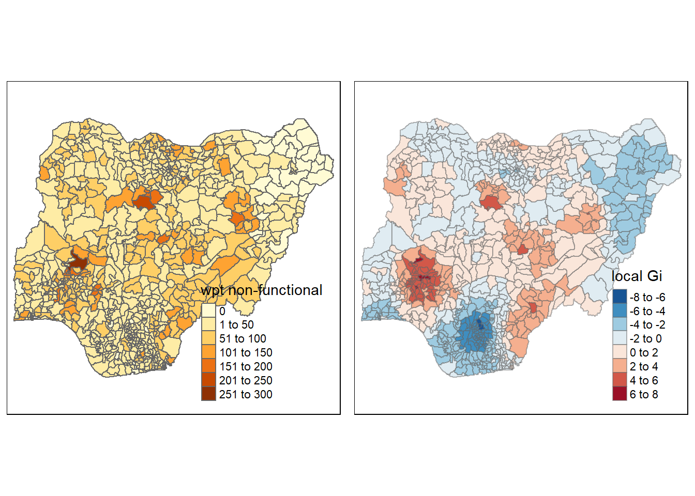
Computing adaptive distance
fips <- order(ngpoint_sf$shapeName)
gi.adaptive <- localG(ngpoint_sf$`wpt non-functional`, knn_lw)
nga_wp.gi <- cbind(ngpoint_sf, as.matrix(gi.adaptive)) %>%
rename(gstat_adaptive = as.matrix.gi.adaptive.)nonfunc <- qtm(ngpoint_sf, "wpt non-functional")
Gimap <- tm_shape(nga_wp.gi) +
tm_fill(col = "gstat_adaptive",
style = "pretty",
palette="-RdBu",
title = "local Gi") +
tm_borders(alpha = 0.5)
tmap_arrange(nonfunc,
Gimap,
asp=1,
ncol=2)Variable(s) "gstat_adaptive" contains positive and negative values, so midpoint is set to 0. Set midpoint = NA to show the full spectrum of the color palette.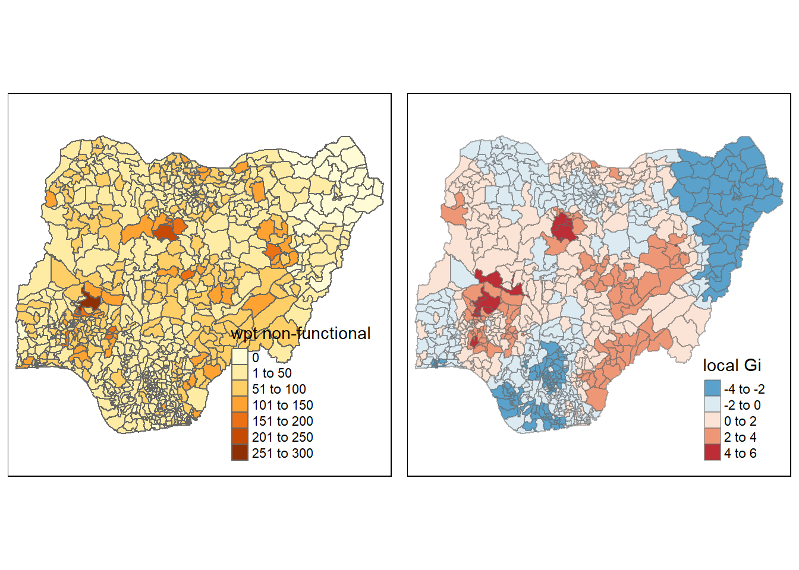
par(mfrow=c(1,2))
plot(ngpoint_sf$geometry, border="lightgrey", main="Adaptive Distance (8)")
plot(k8, coords, add=TRUE, col="green", length=0.08)
plot(ngpoint_sf$geometry, border="pink", main="Fixed Distance")
plot(wm_d73, coords, add=TRUE, pch = 19, cex = 0.6)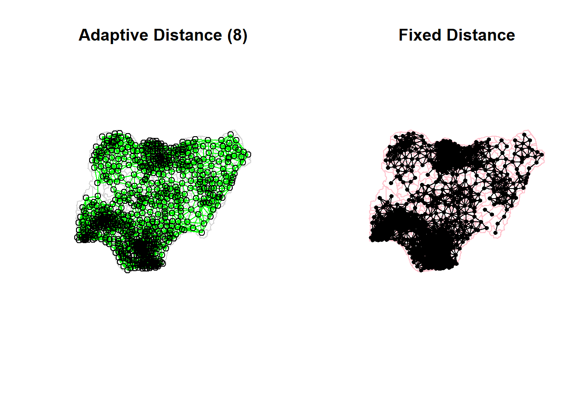
Conclusion
In order to more effectively allocate their limited resources to address any concerns, organizations continue to rely heavily on geospatial autocorrelation.
Organizations will be able to improve the quality of decision-making by using LISA and Gi maps to better comprehend the spatial link based on the attribute being studied.